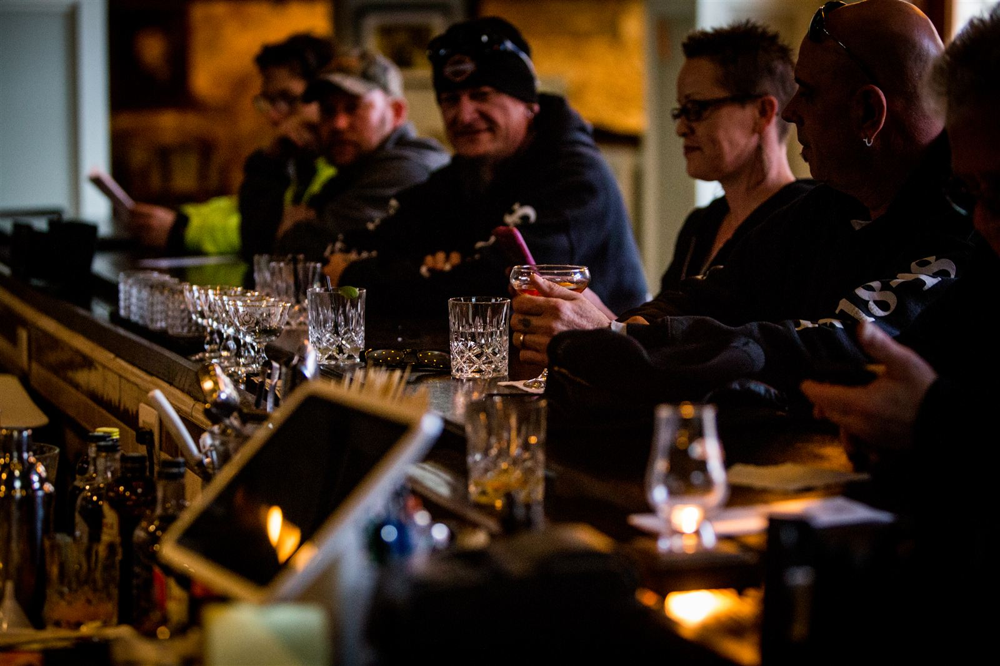

Thornton Distilling
Est. 1857 · Thornton, Illinois
Reserve
Craft cocktails poured with our own spirits, alongside chef-driven plates — served inside the limestone-walled rooms of Illinois' oldest standing brewery.

The Bar · Thornton Distilling Co.Chef-driven plates with a hand on the seasonal Midwest pantry — share-friendly bar boards, wood-fired entrées, and a Sunday burger that's worth the drive.
Craft cocktails built on our own Dead Drop spirits — including the Old Fashioned RTD on draft. Curated bourbons, beer, and a small natural-wine list.
Wed–Thu · 4–9pm
Fri · 4–11pm
Sat · 12–11pm
Sun · 12–9pm
Closed Mon & Tue